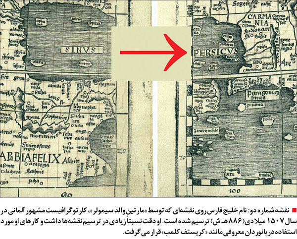
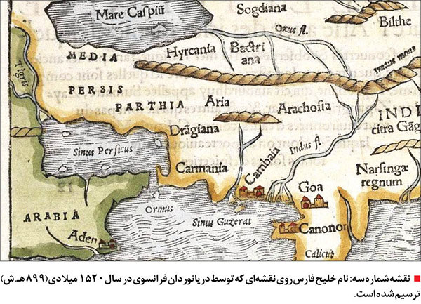
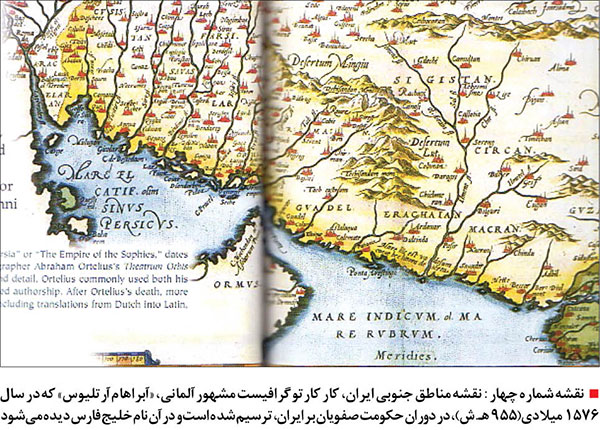
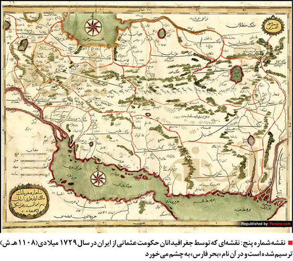

1900: آغاز قرن
در آغاز قرن بیستم، جهان شاهد تغییرات قابل توجهی در فناوری، سیاست و فرهنگ بود. انقلاب صنعتی دوم جوامع جهانی را دگرگون میکرد و برق، تلفن و اتومبیل به طور فزایندهای رایج میشدند.

1914: آغاز جنگ بزرگ
جنگ جهانی اول، که در ابتدا به عنوان جنگ بزرگ شناخته میشد، در سال 1914 پس از ترور آرشیدوک فرانتس فردیناند آغاز شد. این درگیری چشمانداز ژئوپلیتیکی اروپا و جهان را برای نسلهای آینده تغییر داد.

1945: پایان جنگ جهانی دوم
با تسلیم آلمان نازی در ماه مه و ژاپن امپراتوری در سپتامبر، جنگ جهانی دوم در سال 1945 به پایان رسید. دوران پس از جنگ شاهد ظهور ایالات متحده و اتحاد جماهیر شوروی به عنوان ابرقدرتها بود که جنگ سرد را آغاز کرد.

1969: اولین فرود روی ماه
در 20 ژوئیه 1969، فضانورد نیل آرمسترانگ اولین انسانی شد که پا بر روی ماه گذاشت، این رویداد دستاوردی بینظیر در اکتشافات بشری و مسابقه فضایی بین ایالات متحده و اتحاد جماهیر شوروی بود.

2000: هزاره جدید
با ورود جهان به هزاره جدید، انقلاب دیجیتال در اوج خود بود. اینترنت در حال تغییر ارتباطات، تجارت و زندگی روزمره بود و زمینه را برای پیشرفتهای بیسابقه فناوری در قرن بیست و یکم فراهم میکرد.